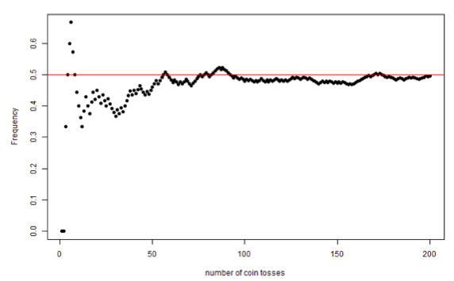
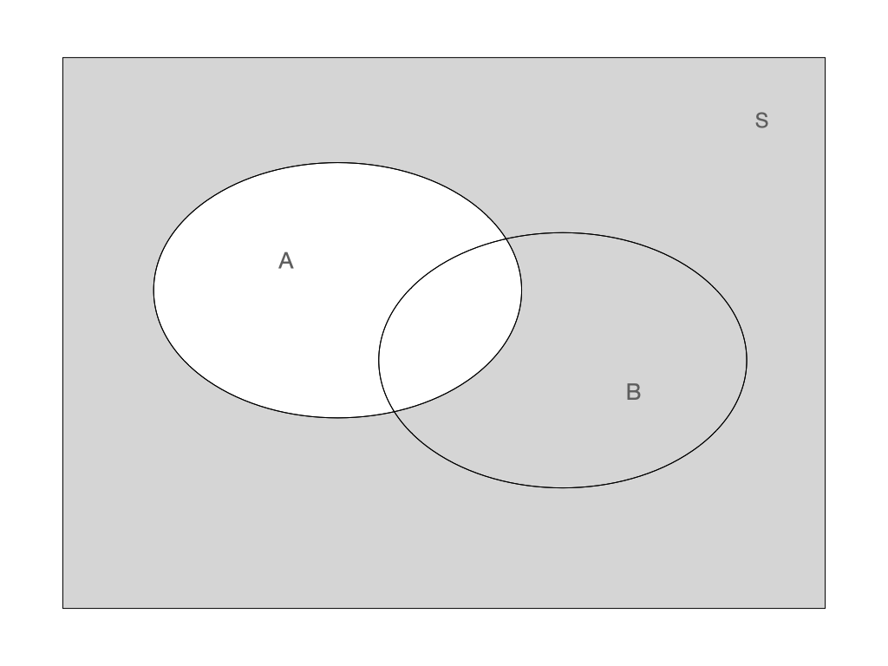
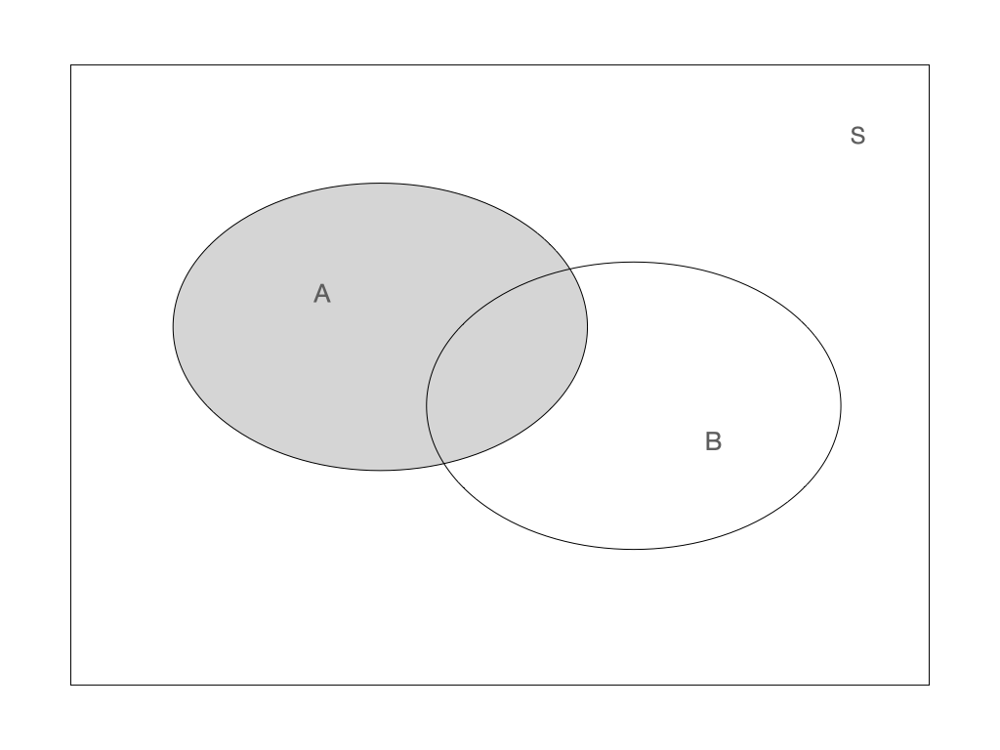

Probability
Topics:
- Basic probability concepts
- Probability calculations
- Conditional and total probability
- Stochastic independence
- Bayes’ theorem
Books and resources:
- Aalen 3.1-3.10 (in Norwegian)
- Kirkwood and Sterne 14 (in English)
Basic concepts
A probability expresses a potential for something to happen.
It is an assessment of uncertainty in a situation or event.
It corresponds to the concept of risk in medicine.
Brief history
Blaise Pascal (17th century) was the founder of probability theory, the set of basic rules for doing probability calculations. His work was motivated by dice and card games.
Andrey Kolmogorov formulated the exact probability rules as late as 1933.
Two definitions of probability
Frequentist definition: Proportions of times (or frequency) that some event occurs in a large number of similar repeated trials.
Bayesian definition: Degree of belief in the occurrence of an event.
In this course we focus in the frequentist definition, the most widely used. However, we will see at the end of this section that the Bayesian definition is important as it constitutes the foundation of the Bayesian approach to statistics, after Thomas Bayes (18th century).
Law of Large Numbers
“As an experiment is repeated over and over, the observed frequency approaches the true probability”.
This figure shows the frequency of heads in up to 200 simulated coin tosses. We can see that the frequency approaches the value 0.5 as the number of tosses grows.

The frequentist view of probability interprets the frequency of an event in a large number of experiments as its probability.
Giving birth to a girl or a boy is perceived as a random event. This table contains the frequencies of occurrence of the event “giving birth to a girl” in Norway during 2019-2022
| Year | Total number of births | Number of boys | Number of girls | Percentage of girls |
|---|---|---|---|---|
| 2022 | 51480 | 26445 | 25035 | 48.6 |
| 2021 | 56060 | 28684 | 27376 | 48.8 |
| 2020 | 52979 | 27063 | 25916 | 48.9 |
| 2019 | 54495 | 28042 | 26453 | 48.5 |
The probability of giving birth to a girl in Norway is approximately 0.49
Probability calculations
Stochastic trial, events and sample space.
A stochastic trial is characterized by an uncertain outcome.
All possible outcomes in a stochastic trial make up the sample space.
An event can be a single outcome, or a collection of single outcomes.
Each event has a probability of ocurrence between 0 and 1. A probability equal to 0 means that the event can never occur, and equal to 1 means that the event is certeinly occuring.
The sum of all probabilities in a sample space equals 1.
Dice tossing
Sample space: {1,2,3,4,5,6}
Events:
Even number of eyes: {2,4.6}
More than 3 eyes: {4,5,6}
Child birth
Sample space: {B,G}
Events:
Having a girl: {G}
Not having a girl: {B}
Diastolic blood pressure
Sample space: {40,41,…,119,120}
Event:
- Hypertension: {91,92, …, 120}
Venn diagram
Venn diagrams are often used to illustrate events. In the figures below A and B represent different events and S is the sample space.
 |
 |
Operators on events:
Union: \(A \cup B\)
Intersection: \(A \cap B\)
Complement: \(\bar{A}\)
 Union: \(A \cup B\) Union: \(A \cup B\) |
 Intersection: \(A \cap B\) Intersection: \(A \cap B\) |
|  Complement: \(\bar{A}\) |  Combining operators: \(A \cap \bar{B}\) Combining operators: \(A \cap \bar{B}\) |
Probability calculation rules
The probability of an event \(A\) is denoted by \(P(A)\). It has a value between 0 and 1. The probability over the whole sample space equals 1.
Complement rule
\[P(A) + P(\bar{A}) = 1\]
Additive rule
The occurrence of at least one of the events \(A\) or \(B\) is \[P(A \cup B) = P(A) + P(B) - P(A \cap B)\] For disjoint events \(A\) and \(B\), \(P(A \cap B) = 0\). Hence \[P(A \cup B) = P(A) + P(B)\]
Multiplicative rule
Probability of independent events can be multiplied
\[P(A \cap B) = P(A) \times P(B)\]
What is the probability of giving birth to at least one girl?
We assume the probability of giving birth to a girl is 0.5.
We assume that the two births are independent events.
\[ \begin{aligned} P(\text{at least one girl}) & =P(\text{1st child is girl}) + P(\text{2nd child is girl})-P(\text{both are girls}) \\ & = 1/2 + 1/2 - 1/2 \times 1/2 = 3/4 \end{aligned} \]
The two throws are independent events.
There are 36 equally possible outcomes.
Only one outcome corresponds to the double 6 event.
What is the probability of getting 6 in the first AND the second throw? $$ P() = 1/6 /6 = 1/36
$$
What is the probability of getting at least one 6 in two throws? \[ \begin{aligned} P(\text{at least one 6 in 2 trows}) &=P(\text{6 in the first}) + P(\text{6 in the second}) - P(\text{6 in both})\\ &=1/6 +1/6 - 1/36 =0.31 \end{aligned} \]
What is the probability of not getting any 6 in two throws? $$ \[\begin{aligned} P(\text{not getting any 6 in 2 trows}) &= 1 - P(\text{at least one 6 in 2 trows})\\ &= 1 - 0.31 = 0.69 \end{aligned}\]$$
Conditional probability
What is the probability of getting the outcome \(A\) given that the event \(B\) has occur? For example, what is the risk of becoming sick from COVID-19 given that your spouse already is?
The idea to define such a conditional probability of \(A\) given \(B\), denoted \(P(A|B)\), is to consider \(B\) as the new sample space and rescale the probability of events in \(B\), such that the new sample space has probability 1:
\[P(A|B) = \frac{P(A \cap B)}{P(B)}\]
This table contains the frequency of joint events: weather forecast and actual weather.
| sunny forecast | cloudy forecast | rainy forecast | |
| sunny weather | 0.3 | 0.05 | 0.05 |
| cloudy weather | 0.04 | 0.2 | 0.02 |
| rainy weather | 0.1 | 0.04 | 0.2 |
Which is the probability of a sunny day?
Which is the probability that the forecast is wrong?
Which is the probability of rain when the forecast is sunny?
Hint: remember to use the special case of the additive rule, holding when A and B are disjoint, \(P(A \cup B) = P(A) + P(B)\)
Stochastic independence
The events \(A\) and \(B\) are independent if \(P(A|B) = P(A)\)
Interpretation: probability of \(A\) is the same if we also know that \(B\) has occurred.
Consider the following:
- \(A\): Probability of me having the condition
- \(B\): Probability of my partner having the same condition
Condition 1: Diabetes, \(P(A|B) = P(A)\)
Condition 2: COVID-19, \(P(A|B) \neq P(A)\)
Probability calculations can be simplified if there is stochastic independence:
\[P(A|B) = \frac{P(A \cap B)}{P(B)} = P(A)\]
\[P(A \cap B) = P(A) \times P(B)\]
Two children are born, which is the probability that genders are different?
\[\begin{aligned} P(\text{girl and boy}) & =P(\text{girl then boy}) + P(\text{boy then girl})\\ & = P(\text{first is girl}) \times P(\text{second is boy}) +\\ &~~~~+ P(\text{first is boy}) \times P(\text{second is girl})\\ & = 1/2 \times 1/2 + 1^/2 \times 1/2 = 0.50 \end{aligned}\]Three dices are tossed, which is the probability of all showing sixes?
\[P(\text{three 6})=1/6 + 1/6 + 1/6 = 1/216 = 0.004\]
A treatment has a side effect which has a risk of 1/1000. Which is the probability that the side effect does not occur among 1000 patients?
Hint: think about independence.
Total probability
The law of total probability expresses the probability of an outcome, \(P(A)\), which can be realized via two distinct events \(B\) and \(\bar{B}\):
\[P(A) = P(A|B)P(B) + P(A| \bar{B})P( \bar{B})\]
Any event \(A\) can be divided in two with regard to another event \(B\):
\[A = (A \cap B) \cup (A \cap \bar{B})\] 
Becase the two events \((A \cap B)\) and \((A \cap \bar{B})\) are disjunct, we can write:
\[ P(A) = P(A \cap B) + P(A \cap \bar{B}) \]
Using the multiplicative rule, we get the law of total probability:
\[ P(A) = P(A|B)P(B) + P(A| \bar{B})P( \bar{B}) \]
- We want to find the probability of two twins having the same gender.
- Monozygotic twins have the same gender, while dizygotic twins are like any other siblings.
- We have to take into consideration if the twins are monozygotic or not. For that we use the law of total probability.
\(A\) = Both twins have the same gender \(B\) = The twins are monozygotic
- We want to find \(P(A)\)
- The probability of twins being monozygotic, \(P(B)\), is 1/3.
- The las of total probability give us:
\[ \begin{aligned} P(A) & = P(A|B)P(B) + P(A| \bar{B})P( \bar{B})\\ & = 1 \cdot 1/3 + 1/2 \cdot 2/3 = 0.67 \end{aligned} \]
Bayes’ theorem (also called Bayes’ law)
Given two events \(A\) and \(B\), Bayes theorem states that:
\[ P(B|A)=\frac{P(A|B)P(B)}{P(A)} \]
It was first formulated by Thomas Bayes (1702-1761)
Bayes law relates the conditional probabilities \(P(B|A)\) and \(P(A|B)\)
What if we want to find the probability that two twins of the same gender are monozygotic?
In other words, what is \(P(B|A)\)?
We can use Bayes’ law and the law of total probability
\[ \begin{aligned}P(B|A) & =\frac{P(A|B)P(B)}{P(A)}\\ & =\frac{P(A|B)P(B)}{P(A|B)P(B) + P(A| \bar{B})P( \bar{B})}\\ & = \frac{1 \cdot 1/3}{1 \cdot 1/3 + 1/2 \cdot 2/3} = 0.5 \end{aligned} \]
Bayesian statistics
In the Bayesian definition of probability, the size of the probability of a given event represents ones degree of belief in the occurrence of the even.
Where does Bayes come in? Bayes’ law is used to calculate such probabilities base on on our prior belief and available data:
\[ P(\theta|data) =\frac{P(data|\theta)P(\theta)}{P(data)} \]
- \(\theta\) refers to the parameters in your model (mean, variance, etc.)
- The prior distribution \(P(\theta)\) is where you put in your prior beliefs
- What you want to estimte is the so called posterior distribution \(P(\theta|data)\), the probability distribution of the model parameters given your data.
- The more data you have, the more will it dominate over your prior belief.
- When youy have prior knowledge about your problem, you get to actually use this information
- When you know little (or nothing) of your problme, there are anyway many methodological advantages in using Bayesian statistics
- Bayesian statistics is not really relevant for simpler problems like in this course, but you will probaly at some point come across articles using Bayesian approaches.